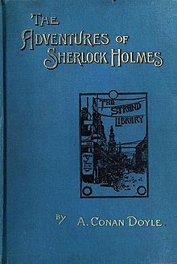

The Adventures of Sherlock Holmes
By Arthur Conan Doyle
All of the stories within The Adventures of Sherlock Holmes are told in a first-person narrative from the point of view of
Dr. Watson, as is the case for all but four of the Sherlock Holmes stories. The Oxford Dictionary of National Biography
entry for Doyle suggests that the short stories contained in The Adventures of Sherlock Holmes tend to point out
social injustices, such as "a king's betrayal of an opera singer, a stepfather's deception of his ward as a fictitious
lover, an aristocratic crook's exploitation of a failing pawnbroker, a beggar's extensive estate in Kent." It suggests
that, in contrast, Holmes is portrayed as offering a fresh and fair approach in an unjust world of "official incompetence
and aristocratic privilege". The Adventures of Sherlock Holmes contains many of Doyle's favourite Sherlock Holmes
stories. In 1927, he submitted a list of what he believed were his twelve best Sherlock Holmes stories to The Strand
Magazine. Among those he listed were "The Adventure of the Speckled Band" (as his favourite), "The Red-Headed League"
(second), "A Scandal in Bohemia" (fifth) and "The Five Orange Pips" (seventh). The book was banned in the Soviet
Union in 1929 because of its alleged "occultism",[8] but the book gained popularity in a black market of similarly
banned books, and the restriction was lifted in 1940.

More information